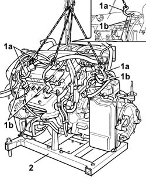
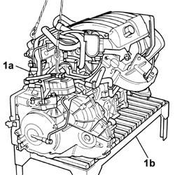
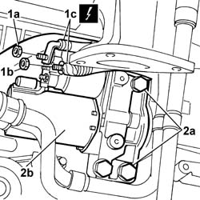
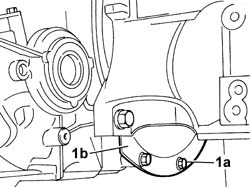
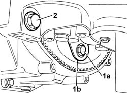
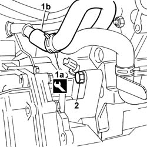
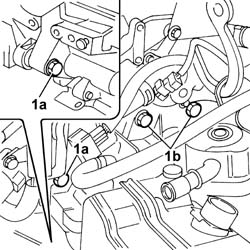
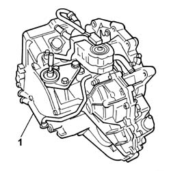

1004D20 POWER UNIT (AUTOMATIC TRANSMISSION) REMOVED, REMOVE AND RE-BUILD
- Path
- Procedures > 10 ENGINE > 1004 ENGINE AND POWER UNIT > 1004D REMOVE ENGINE AND WASH > 1004D20 POWER UNIT (AUTOMATIC TRANSMISSION) REMOVED, REMOVE AND RE-BUILD
- Kind
- repair procedure (removal / refitting; the operation number is the code)
- Applies to
- engines: 3.0 24V V6; all production periods
- Interactive page
- https://sloeber94.github.io/elrnDB-fUlss/en/#/179006841
Applies to: engines: 3.0 24V V6; all production periods
 Removing
Removing
 Refitting
Refitting1. Secure the power unit to a lifting device using the hooks (1a) fitted in the special mounting points (1b).
2. Undo the fixing bolts on the mounting brackets and remove the power unit from the tool for removing and refitting the engine.

Applies to: engines: 3.0 24V V6; all production periods
1. Position the power unit (1a) on a support (1b).

Applies to: engines: 3.0 24V V6; all production periods
1. Undo the nuts (1a) and (1b) and disconnect the leads (1c) from the starter motor.
Description | Connector | |
|---|---|---|
1a | Starter motor |
Description | Connector | |
|---|---|---|
1b | Starter motor |
2. Undo the retaining bolts (2a) and remove starter motor (2b) from the engine.

Applies to: engines: 3.0 24V V6; all production periods
Lift the power unit to gain access to the engine flywheel guard fastenings.
1. Undo the retaining bolts (1a) and remove flywheel guard (1b).

Applies to: engines: 3.0 24V V6; all production periods
Rotate the flywheel to gain access to the bolts fixing the torque converter coupling to the flywheel.
1. Undo the bolts fixing the torque converter coupling to the flywheel.
2. Undo the bolt fixing the gearbox to the engine.

Applies to: engines: 3.0 24V V6; all production periods
Rest the engine on the support once again, then:
1. Loosen the bands (1a) using the special tool and detach the coolant return pipe (1b) from the transmission fluid heat exchanger to the engine.
Description | Code | Function | |
|---|---|---|---|
1a | Caliper | Band opening |
2. Undo the bolt fixing the gearbox to the engine.

Applies to: engines: 3.0 24V V6; all production periods
1. Undo the bolts (1a) and (1b) fixing the automatic transmission to the engine.

Applies to: engines: 3.0 24V V6; all production periods
1. Detach and remove the automatic transmission from the engine with the help of a second mechanic and place it safely.

Applies to: engines: 3.0 24V V6; all production periods
Refitting
RemovingFit the gearbox on the engine, with help of a second mechanic and tighten the fixing bolts to the recommended torque.
Value daNm | Fastening | Component | dia | |
|---|---|---|---|---|
. | 6,5 | Bolts | POWER UNIT WITH AUTOMATIC TRANSMISSION - R.R. |
Lift the power unit and .pre-tighten the bolts fixing the torque converter coupling to the flywheel to the recommended torque.
Value daNm | Fastening | Component | dia | |
|---|---|---|---|---|
. | 2 | Bolts | POWER UNIT WITH AUTOMATIC TRANSMISSION - R.R. |
Resume the tightening until the recommended torque is produced.
Value daNm | Fastening | Component | dia | |
|---|---|---|---|---|
. | 6 | Bolts | POWER UNIT WITH AUTOMATIC TRANSMISSION - R.R. |
Position the flywheel guard and tighten the fixing bolts.
Connect the coolant return pipe from the automatic transmission fluid heat exchanger to the engine and, renew the retaining bands, using the special tool.
Description | Code | Function | |
|---|---|---|---|
. | Caliper | Band opening |
Position the starter motor and tighten the bolts.
Connect the electrical leads to the starter motor terminals and tighten the nuts.
Description | Connector | |
|---|---|---|
. | Starter motor |
Description | Connector | |
|---|---|---|
. | Starter motor |